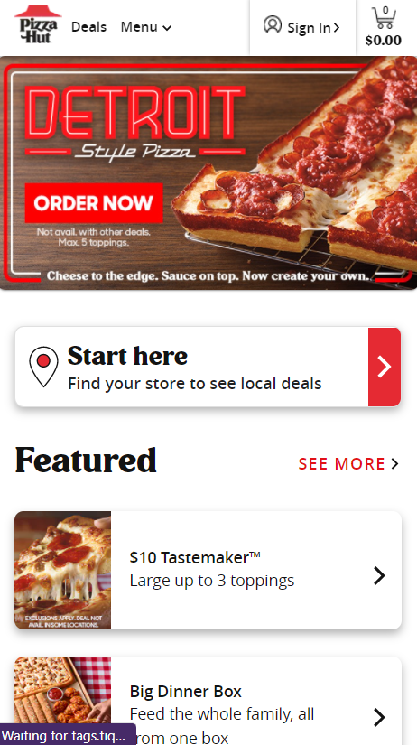
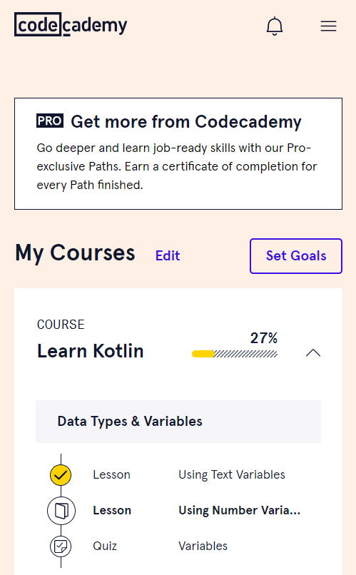

Design Principles
Ammon WilsonVisual Hierarchy
Nintendo Digital Store
https://www.nintendo.com/games/buy-digital/
Nintendo created a great layout for their webpage when it comes to visual hiearchy. With some websites, your eye might only be focused on one part of the screen. On the other hand, the layout of this webpage makes everything have weight with everything is placed. Your eye is intrigued by the ad for a new game ("Metroid Dread" for this example), and your eye moves all over the screen with the varied shapes.
Visual hiearchy with web design creates a sense of balance and eye movement throughout a design. It is all balanced and nothing feels out of place. There is usually one part of a piece of design that sticks out as the most important, but does not feel like it ruins the flow of a page.
Pizza Hut
The whole idea of repetition for this webpage is the "Featured" section of the Pizza Hut mobile site. This helps the whole layout to feel consistent and organized. If the layout was all over the place, the whole webpage would fall apart design-wise. Repetition might sound like a waste of time for web design, but it keeps the layout organized.
White Space
Codecademy
There is a sense of padding with the layout of the Codecademy mobile webpage. Many parts of the paged is spced out to create a sense of even padding. With white space, the whole "spacing" aspect of web design is important for organization. The whole layout could be ruined if the spacing was reduced too much or increased too much.